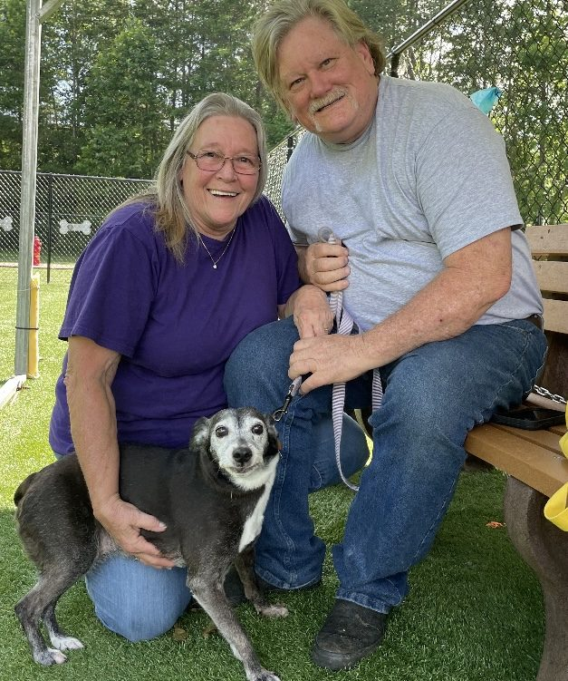
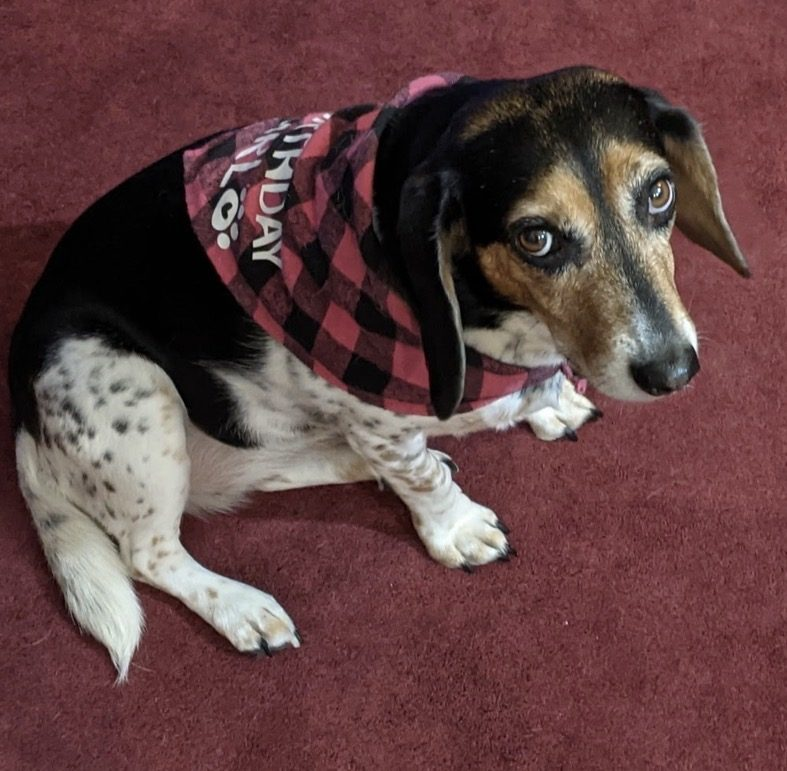

Thirty years of second chances.
Baker Bridge Rescue has rehomed more than 1,600 dogs. Today we carry that work forward as an advocacy and sanctuary organization. Shop the store, meet the residents, and join the mission.
The Rescue Store
Shirts, mugs, and gifts. Every order helps feed and care for the residents. Items are printed and shipped by our print partner.
The same heart, in a new form
For thirty years we answered the calls no one else would. In 2024 we made the hardest decision of our lives and ended intake. We are not quitting rescue. We are crossing a bridge.
Baker Bridge Rescue now works in advocacy, education, and lifelong sanctuary care for the eleven dogs and cats who still call this place home. Every purchase and every gift goes to them, and to the animals we can still speak for.
Betty and John Baker
Founders, Baker Bridge Rescue

Advocacy
Pushing for humane laws and responsible ownership, from city hall to Washington.
Sanctuary
Lifelong care for the eleven dogs and cats who remain in our keeping.
Education
Helping owners, adopters, and rescuers understand the rules that protect animals.
Resource
A trusted ally for shelters, rescuers, and families who need help finding help.
Doc's story
Tyson, better known as Doc, came to us feral, terrified, and covered in mange. We nursed his body back to health. The fear took longer.
Then a patient young couple took him home and kept working. Watch him now. Off leash, confident, and free. This is why we did it for thirty years.
Happy endings
Real families who opened their homes. Tap a card to watch their videos.

Bella
John spotted her hiding under a car in a dangerous neighborhood. Her family cannot imagine life without her.
Watch Bella's video
Coco
Loved so much his family got him a girlfriend. Now both dogs travel with them to New York, Boston, and Philly.
Watch Coco's video
Lulu Rose
Two little girls worked hard to earn the right to a puppy. Their video is their thank you for a job well done.
Watch Lulu Rose's video
Logan
A Great Pyrenees who struggled to trust people. His adopters restored his security and his happiness.
Watch Logan's video“Dogs are not our whole lives, but they make our lives whole.”
— A favorite saying around here
What your gift provides
BBR runs on donations alone. No grants and no government funding. Just animal lovers like you. Here is where your gift goes.
Fencing
Safe play space and separation for the dogs who need their own room to roam.
Kennels
Day to day housing, bedding, food, and everything it takes to run the kennel.
Vet care
Spay and neuter, annual exams, vaccines, and emergency treatment when it counts.
Medications
Flea, tick, and heartworm prevention, plus supplements for the seniors.
Building supplies
Repairs and upgrades around the sanctuary, from dog houses to gates.
Carry cart
You never go empty handed to the kennels. Feed, straw, and supplies add up fast.
Our wish list
A small gift, even the price of a drive through meal, keeps the residents fed, warm, and healthy. If you have already given, thank you. Sharing our story with your animal loving friends helps just as much.
Shop through our links
Full disclosure: these partners send us a small commission when you shop through our links. It is something you were going to buy anyway, and it costs you nothing extra.
Start your Amazon trips here
A small percentage of anything you buy comes back to the rescue. Bookmark our link and use it every time.We are working on adding links for Walmart, Target, Home Depot, Patreon, and Buy Me a Coffee. Check back soon.
With thanks to our partners
Dixie Day Spay
A nonprofit clinic working to end the killing of healthy companion animals by making spay and neuter surgery affordable and accessible.
Visit Dixie Day SpayRescue Riders LLC
A USDA approved transport that carried our dogs to their new families across Maryland, Pennsylvania, New York, Connecticut, and New Hampshire.
Visit Rescue RidersSpecial thanks to Dr. Sanders and the team at Keith Street Animal Clinic for years of care, and to every adopter who opened their home.
The quarterly newsletter
Sanctuary updates, advocacy wins, and the occasional very good dog photo. Four emails a year. No spam, ever.
